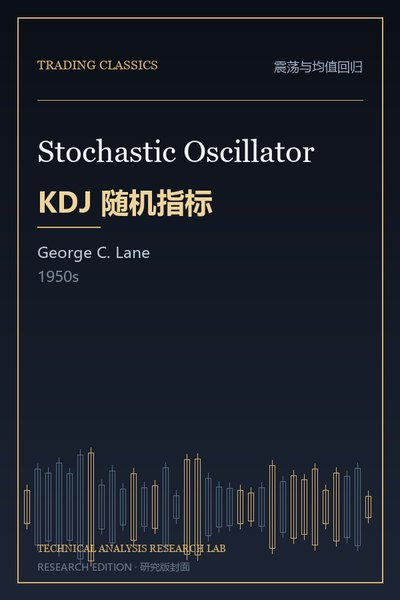

封面：研究版设计（原版封面暂缺）
震荡与均值回归 · 重要补充
KDJ 随机指标实战
Stochastic Oscillator (Lane’s Stochastics)
核心命题：随机指标之父：收盘价在区间中的位置，反映多空力量在短期内的此消彼长。
“随机指标测量的是收盘价在近期区间中的相对位置。”
最有价值的技术观点
以下 5 条按“可直接用于交易决策”的标准筛选，而不是按书中的篇幅。
01K 与 D 的交叉
K 上穿 D 为金叉（买入），下穿为死叉（卖出）；低位金叉、高位死叉更可靠。
02超买超卖区
K > 80 为超买，K < 20 为超卖；但强趋势中指标会长期钝化，不能机械反向。
03背离信号
价格创新高而 K 值不创新高（顶背离），是趋势衰竭的早期信号。
04J 值的极端
J > 100 或 J < 0 代表短期极端，常伴随反弹/回调。
05周期选择
短周期（5,3,3）敏感但噪音大；长周期（14,3,3）稳定但滞后。
可执行要点
- 低位金叉 + 趋势向上才买，高位死叉 + 趋势向下才卖。
- 把背离当作预警，而不是立即反向。
- 震荡市用 KDJ，趋势市改用趋势指标。